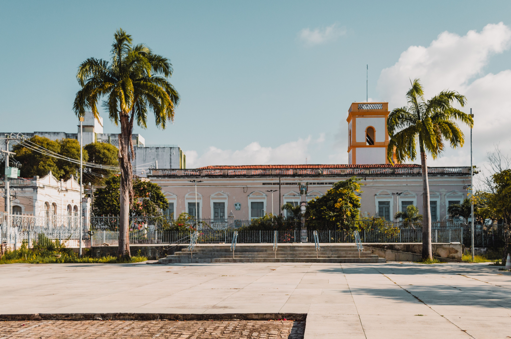
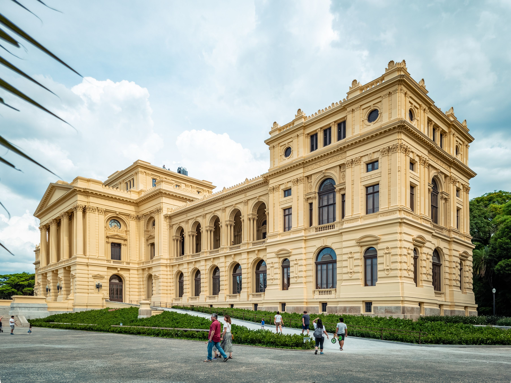
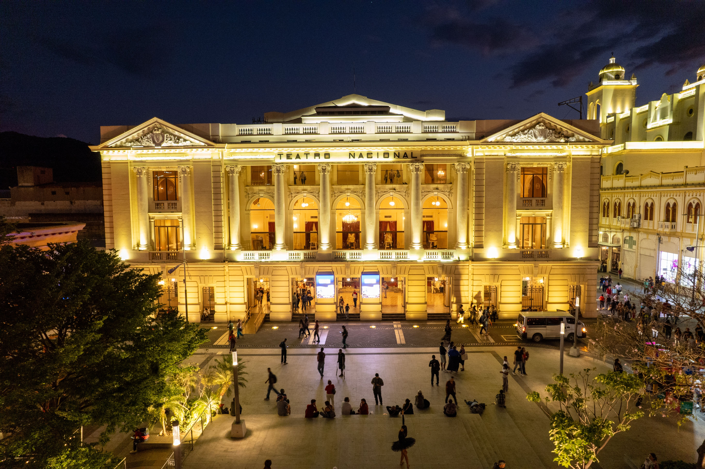
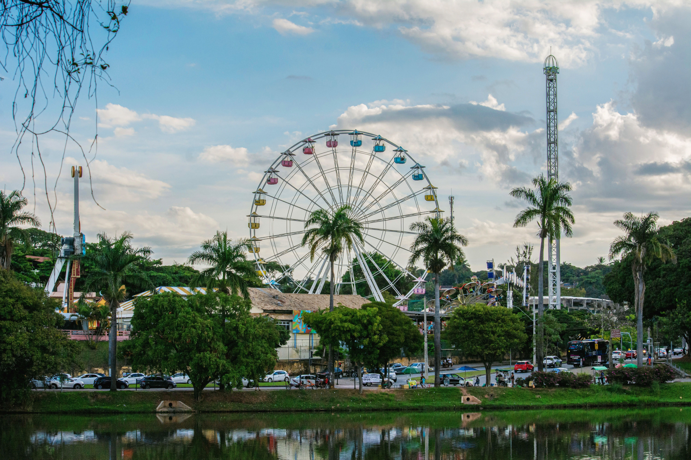

Descubra lugares, histórias e experiências que conectam pessoas à cultura. Explore espaços especiais, conheça novos lugares e valorize a arte, a história e o patrimônio cultural.

Um espaço dedicado à preservação da história e da cultura, com exposições, objetos históricos e obras que ajudam a conhecer diferentes épocas.
São Paulo - SP

Espaço cultural que recebe peças de teatro, apresentações musicais, dança e diversos eventos artísticos.
Campinas - SP

Um espaço ao ar livre que combina natureza, lazer e cultura, ideal para caminhadas, atividades recreativas e momentos em família.
Sorocaba - SP